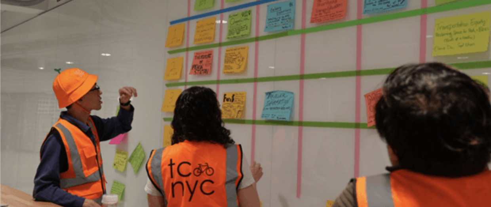

My academic interests include topics such as transportation planning & engineering, design of public transit system, urban policy, travel behavior, etc.
I'm super interested in how transit systems can connect different neighborhoods, workplaces, and public spaces to make people's life much easier.
Here is an event that I have participated in 3 consecutive years: NYC Transportation Camp"

Photo Credit: NYC Transportation Camp

Photo Credit: Haochen Zhang